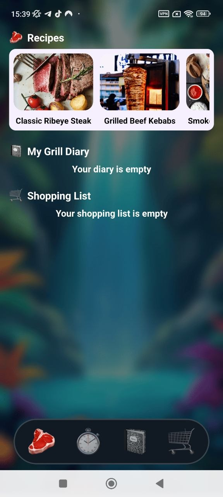
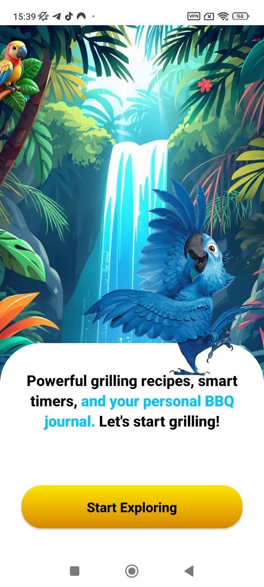

Tropical grilling experience
Grill smarter with recipes, timers, lists and your own BBQ diary.
AMZN Grilled Spot helps you organize the whole grilling flow in one place: explore recipes, launch cooking timers, save grill diary entries, and build shopping lists for your next BBQ session.


Recipes
Classic Ribeye Steak
Smart timers
Smoked Beef Brisket · 240:00
Classic Ribeye Steak
Grilled Beef Kebabs
Smoked Beef Brisket
Recipe presets
Timer stacks
Shopping lists
Grill diary
Classic Ribeye Steak
Grilled Beef Kebabs
Smoked Beef Brisket
Recipe presets
Timer stacks
Shopping lists
Grill diary
Product features
Built for the full BBQ flow, not just recipe browsing
This landing is structured around real app actions: discover what to cook, launch timers, save notes in your grill diary, and keep ingredients ready in your shopping list.
Recipe Browser
Browse recipes with clear categories, cook time and difficulty
The recipe screen presents the essentials fast: image, title, estimated time and complexity. It feels practical and easy to scan.
- Beef, pork, chicken and more
- Fast visual filtering
- One-tap add actions
Recipe Details
Step-by-step cooking instructions with clean hierarchy
Big titles, strong imagery and readable preparation steps make recipe execution feel easy on mobile.
Grill Timers
Stack multiple active timers for different dishes at once
Perfect for real grilling sessions when different recipes need different durations and attention.
Diary
Track your grilling sessions in a personal BBQ journal
Save titles and notes so the app becomes useful beyond one-time recipe reading.
Shopping List
Turn ingredients into a simple checklist before your next cook
Keep the preparation side organized with quick add and checked states.
App flow
From inspiration to execution to logging the result
The page layout is intentionally different from the last project: more tropical, more editorial, more card-driven, and with a stronger balance between white recipe screens and blurred colorful backgrounds.
Use recipe cards that look useful, not generic
The recipe section highlights recognizable dishes, cook times and difficulty levels. It gives the user confidence before they even open the detailed cooking page.
Fast scanning
Clean images
Difficulty tags
Preparation flow
Multiple active timers make the app practical during real cooking
Instead of a simple decorative timer, the screen supports real parallel grilling sessions and presets for longer recipes.
Long sessions
Parallel timers
Preset support
Quick launch
The diary screen gives the app more long-term value
The user can log what was cooked, save a title, and build a personal grilling history instead of forgetting every session.
Save entries
Track experiments
Keep notes
Personal archive
Shopping support completes the whole grilling workflow
This is what makes the product feel more complete: it helps before, during and after cooking instead of only showing recipes.
Ingredient checklists
Prep support
Quick items
Simple UX
Tropical glassmorphism instead of standard dark app promo
The blurred jungle-waterfall mood, rounded white cards and warm yellow accents make this landing feel different and more memorable.
Recipe app, timer app and utility app in one product story
The page explains why users should keep the app installed: recipes, active cooking support, diary history and prep lists.
Used only the stronger screenshots instead of stuffing everything
I kept the gallery tighter so the landing feels cleaner and more premium.
Because it combines strong background atmosphere, floating glass cards, staggered screenshots, interactive previews and a more editorial content layout.
It helps at every stage: choose the recipe, manage the cook time, write results down and prepare ingredients for next time.
It does not just show images. Each section explains a real use case, so the screenshots support the sales story.
User impression
Made to feel tasty, useful and premium at the same time
The page is designed to sell the vibe of grilling while still feeling like a practical mobile utility product.
★★★★★
“The timer section is what makes this app feel actually useful, not just decorative.”
★★★★★
“The tropical style is different from standard food app landings. It stands out instantly.”
★★★★★
“Recipes, diary and shopping list in one place gives the product a much stronger value.”
Ready to grill smarter?